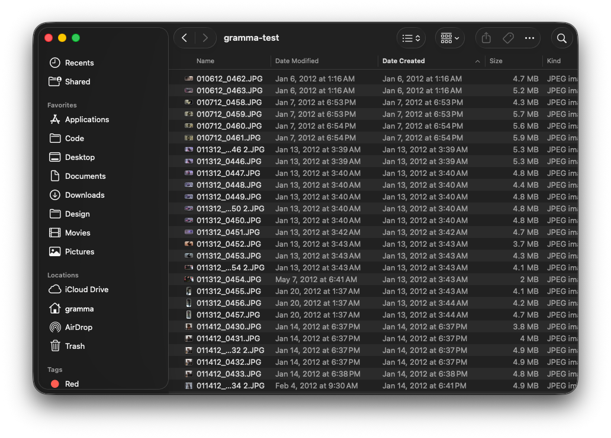
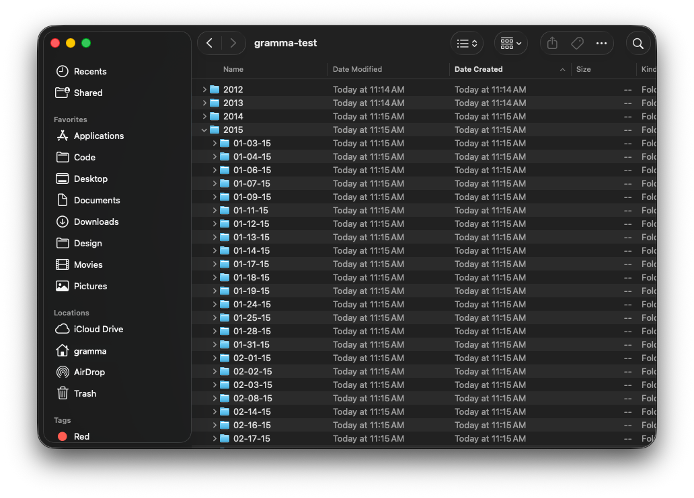
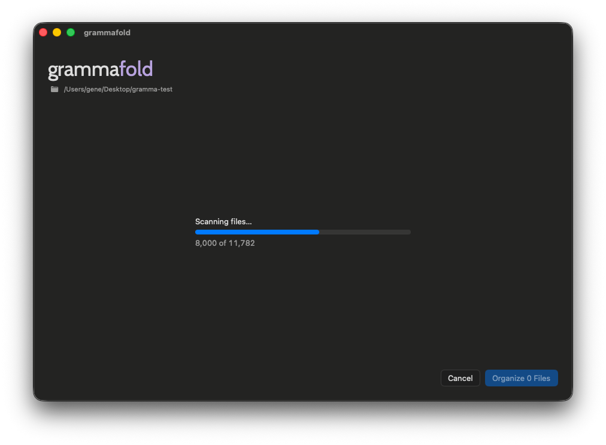
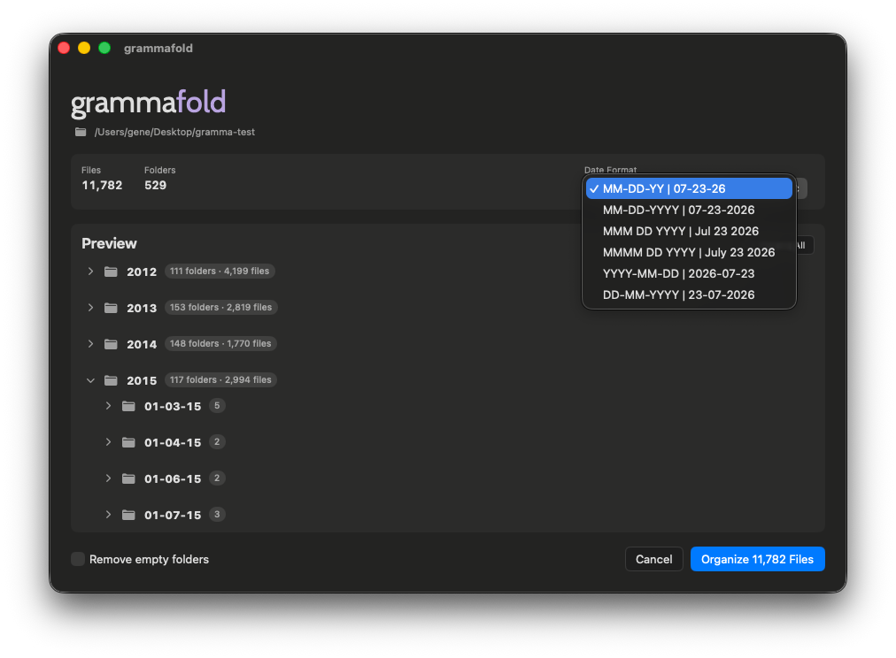
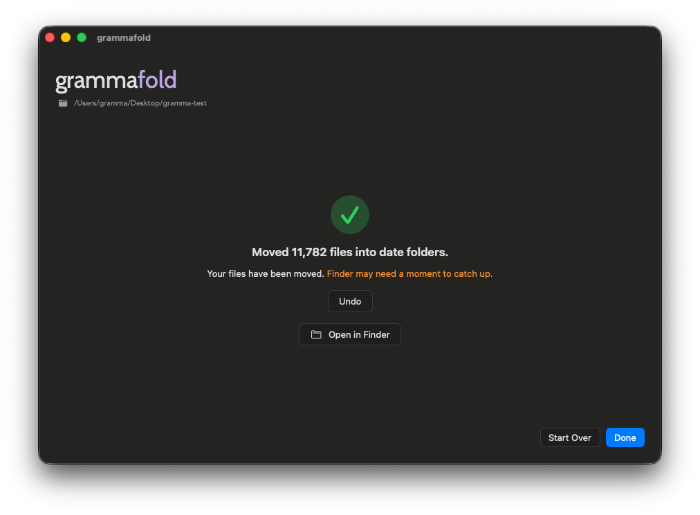

Photos and videos scattered in one folder.

Organize photos and videos into folders by date.
Drop a folder, preview the plan, and organize — all on your Mac. No uploads. No account.
See the difference in Finder.
Photos and videos scattered in one folder.

A clear folder for each date, organized by year.

Four simple steps. You always preview before anything moves.
Step 1
Drag a folder into Grámmafold, or click Choose Folder.

Step 2
It finds the date for each photo and video. Large folders may take a moment.

Step 3
See exactly where every file will go. Pick the date style you prefer before organizing.

Step 4
Confirm to move files into date folders. Changed your mind? Undo puts everything back.

Download Grámmafold from the Mac App Store.
Download on the Mac App Store